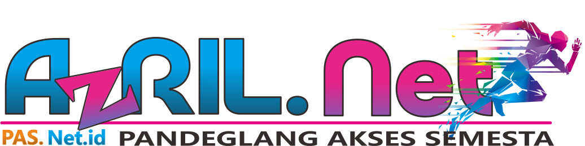

Akses Internet Anda Sedang Dibatasi
Internet Anda sedang dalam status
isolir. Hal ini biasanya terjadi karena:
- Tagihan belum dibayar / jatuh tempo
- Masa aktif layanan telah berakhir
- Ada pembatasan sementara oleh sistem
Provider Internet:
AZRIL.NET (PASNet) Pandeglang Akses Semesta
Cara Memulihkan Layanan:
- Hubungi admin melalui WhatsApp
- Lakukan pembayaran sesuai informasi
- Kirim bukti pembayaran
- Tunggu verifikasi (1–5 menit)